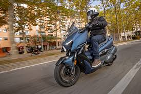
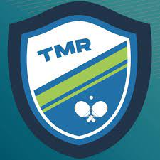
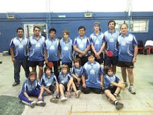
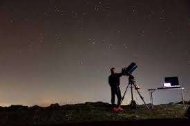
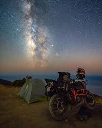
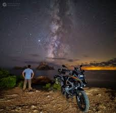
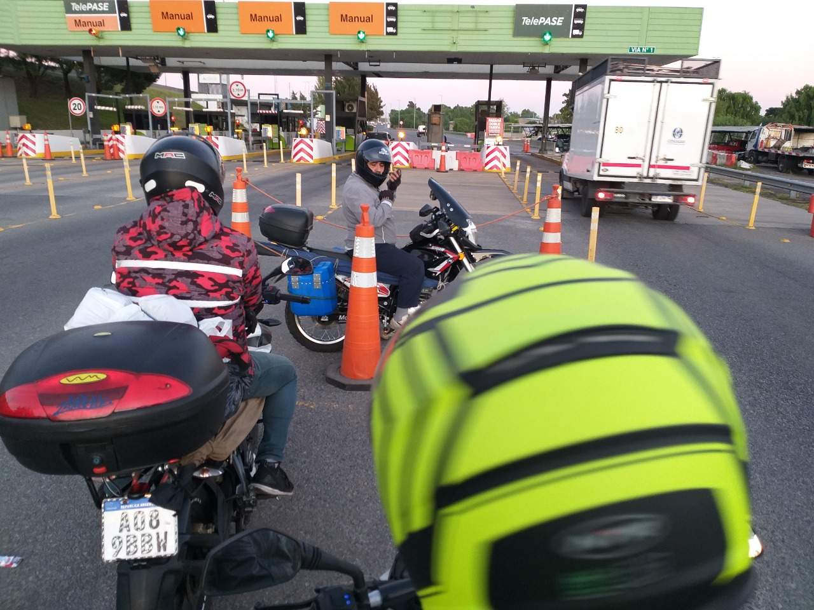
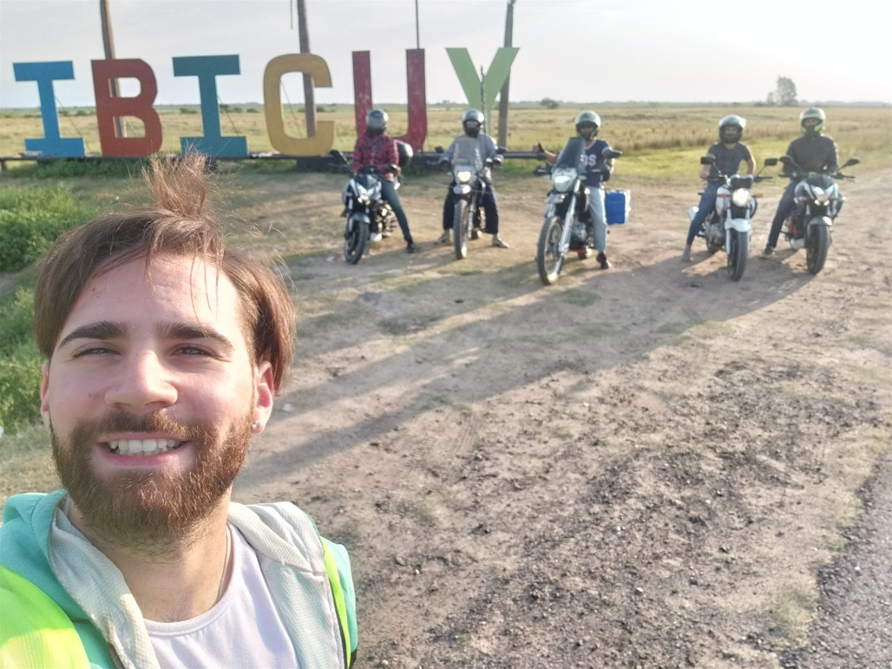
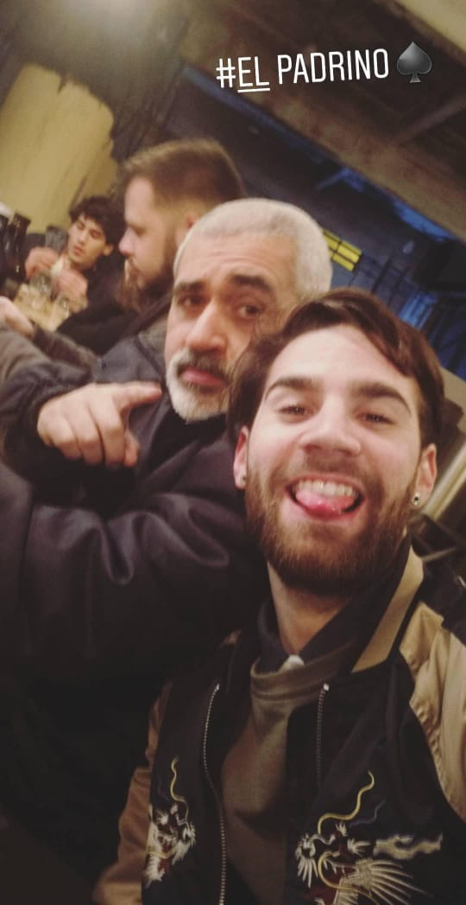

Qué es lo que busco de esta moto???
Un medio de transporte que me lleve a practicar el deporte que me apasiona que es el tenis de mesa…
  Un medio de transporte que me lleve a disfrutar de mi hobby… y adivinen cual es???
  Y compartir esta pasión con aquellos que les gusta como ser mis hermanos, hijos y amigos…
  